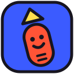
A tiny toolbox to make your website fun to scroll. Add two lines, then sprinkle data-fs-* attributes on anything.
<!-- in your <head> --> <link rel="stylesheet" href="https://funscroll.life/kit/funscroll.css"> <!-- before </body> --> <script src="https://funscroll.life/kit/funscroll.js"></script>
Every effect is one attribute. Each one tries out an idea from the manifesto. Mix them, break them, make them yours.
Things arrive when they enter the screen, from wherever you want.
<div data-fs-reveal="left">…</div>
<!-- up · down · left · right · pop · spin -->
Text splits into letters that play with the scroll. scatter assembles in the middle of the screen, wave ripples, dance reacts to how fast you scroll.
<h1 data-fs-letters="dance">hello</h1>
<!-- scatter · wave · dance -->
The whole element leans and wobbles with your scroll speed. Stop, and it rests.
<div data-fs-dance>…</div>
Layers move faster, slower, sideways or in circles while you scroll. Depth, the cheap way.
<div data-fs-parallax="-0.5">…</div> <div data-fs-parallax-x="0.8">…</div> <div data-fs-spin="360">…</div>
Float bobs forever, for no reason. Jelly squishes when you touch it.
<img data-fs-float src="…"> <button data-fs-jelly>squish</button>
Let people rearrange your page. It's their page too.
<div data-fs-drag>…</div>
On phones, things lean when you tilt the device. On desktop, they follow the mouse. iPhones need permission, so call FS.enableTilt() from a button.
<div data-fs-tilt="30">…</div> <button onclick="FS.enableTilt()">tilt!</button>
Any emoji becomes the cursor inside an element.
<section data-fs-cursor="🍓">…</section>
A button that takes people somewhere random, outside your site. The anti-retention button.
<a data-fs-door='["https://neal.fun/deep-sea/", "https://zzz.zoomquilt.org"]'>surprise me</a>
Turn a section into a sideways ride, or slow it down so time feels different. The home page uses both.
<section data-fs-horizontal>
<div class="fs-sticky">
<div data-fs-track>…panels…</div>
</div>
</section>
<section data-fs-slow="0.3">
<div class="fs-sticky">
<div data-fs-track>…</div>
</div>
</section>
<!-- a bar that fills as the page ends -->
<div data-fs-progress style="position:fixed;…"></div>
For years, having your own website meant knowing how to code or paying someone who did. So most of us moved into the same three or four apps, and our work ended up living in someone else's feed.
That changed. With vibe coding you describe what you imagine in your own words, an AI writes the code, and you keep shaping it until it feels right. Anyone can make a website now: artists, musicians, cooks, teenagers, grandparents.
That makes leaving social media possible. Your own corner of the internet, built the way you want, where no algorithm decides who sees it. Making your own website is the most practical way to get out of the doomscroll.
Before thinking "header, menu, footer", ask yourself what you want people to feel. Calm? Lost? Like opening a drawer full of things? Tell the AI that first.
Ask for "a single index.html file with the CSS and JavaScript inside". You can open it by double-clicking, no installs needed. Grow from there.
Paste the two lines of the funscroll kit and the list of data-fs-* attributes into your chat. Then ask it to use them. It saves a lot of trial and error.
Small steps: "make the title bigger", "now make the photos float". If you ask for ten things at once, something will break and you won't know what.
Most people will visit from a phone. Check it there often, and ask the AI to fix what looks wrong: "on my phone the text goes off the screen".
When something works, save a copy (index-v3.html) or use GitHub. Then you can experiment without fear of losing what you had.
GitHub Pages, Netlify or Neocities host simple websites for free. A domain of your own costs a few dollars a year and makes it yours.
"Explain what you just changed, like I'm new to this." You'll learn without noticing, and you'll be able to fix small things yourself.
Your photos, drawings, scans, handwriting, voice memos. AI makes the structure; what makes it yours is the material only you have.
AI tends to repeat the same looks: purple gradients, rounded cards, everything centered. Ask for something specific: "like a 90s zine", "like a museum label", "like my grandmother's kitchen".
Two fonts and three or four colors are enough. Choose them yourself (Google Fonts has hundreds) and tell the AI exactly which ones.
Ask for things to overlap, tilt, be out of place. Order is the default; mess has to be requested.
A final screen, a goodbye, a "you can close this tab now". It's the most anti-doomscroll thing you can do.
A word that changes when you hover it, a double-click that does something unexpected. Small rewards for the curious.
An emoji, a drawing of yours, a tiny hand. It changes the whole mood with one line (data-fs-cursor).
Ask for images in WebP and not too big. A fun website that takes a minute to load stops being fun.
Ask for "alt text on images" and to respect "prefers-reduced-motion", so people who get dizzy with motion can visit too. The kit already does the second one.
Link to the websites you love. The opposite of a platform: a website that's happy when you leave to discover something else.
Make me a single index.html file with CSS and JavaScript inside. It's my personal website. Load the funscroll kit (https://funscroll.life/kit/funscroll.css and https://funscroll.life/kit/funscroll.js) and use its data-fs-* attributes. I want my name huge with data-fs-letters="scatter", a few sentences about me that appear with data-fs-reveal, and an ending screen that says goodbye. Colors: [your colors]. Fonts: [your fonts].
Turn this list of my works into a page where the images float (data-fs-float), can be dragged around (data-fs-drag) and move at different speeds while scrolling (data-fs-parallax with values between -0.6 and 0.6). No grid: place them like a collage. Clicking an image opens it big.
Make a page for these poems where each one appears slowly, one line at a time, inside a section with data-fs-slow="0.25". Lots of empty space, one font only, and at the end a button that takes the reader to a random website from this list: [links].
On my phone [describe what you see]. I expected [what you wanted]. Fix only that, don't change anything else, and explain in simple words what was wrong.
For your own funscrollable sites. Put the badge in a corner, join the ring, tell people where the idea comes from.
Every logo and badge as a PNG, in English and Spanish. Click one to open it, or take them all at once.
⬇ all of it (.zip)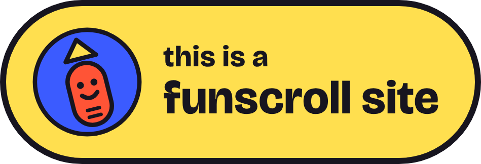
this-is-a-funscroll-site-amarillo.png
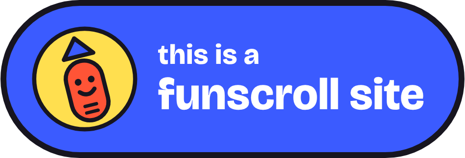
this-is-a-funscroll-site-azul.png
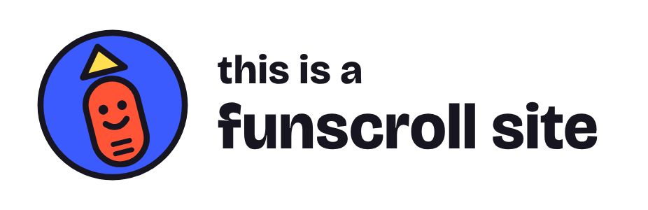
this-is-a-funscroll-site-transparente.png
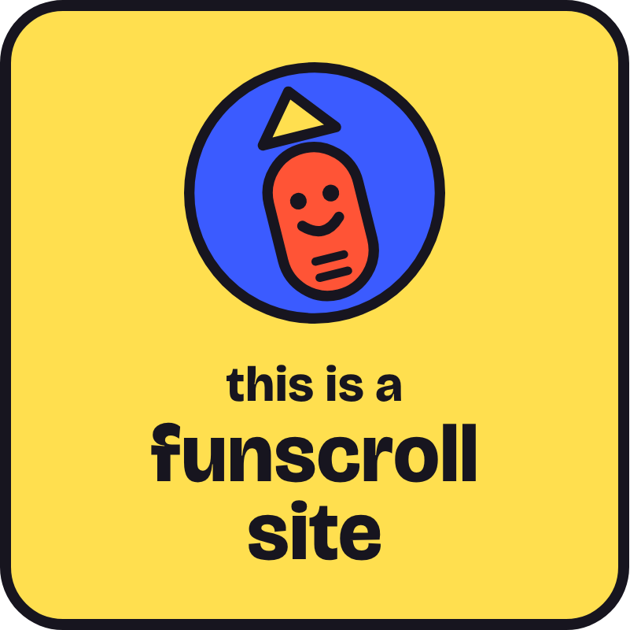
this-is-a-funscroll-site-cuadrado-amarillo.png
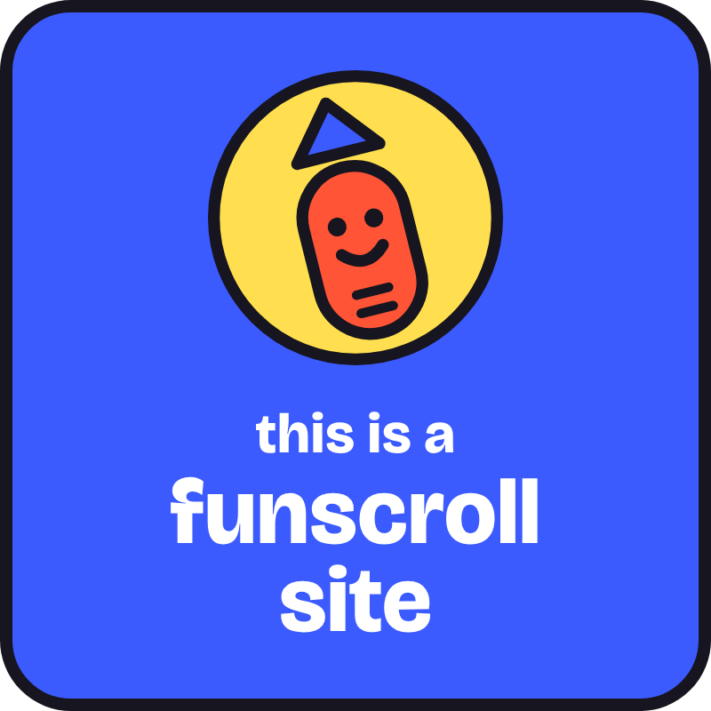
this-is-a-funscroll-site-cuadrado-azul.png
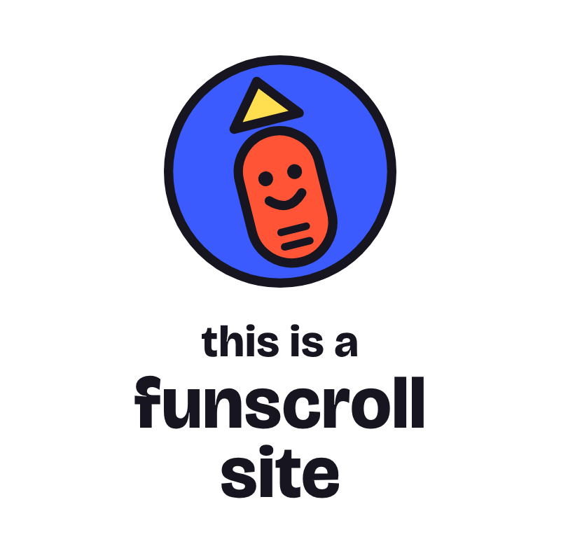
this-is-a-funscroll-site-cuadrado-transparente.png
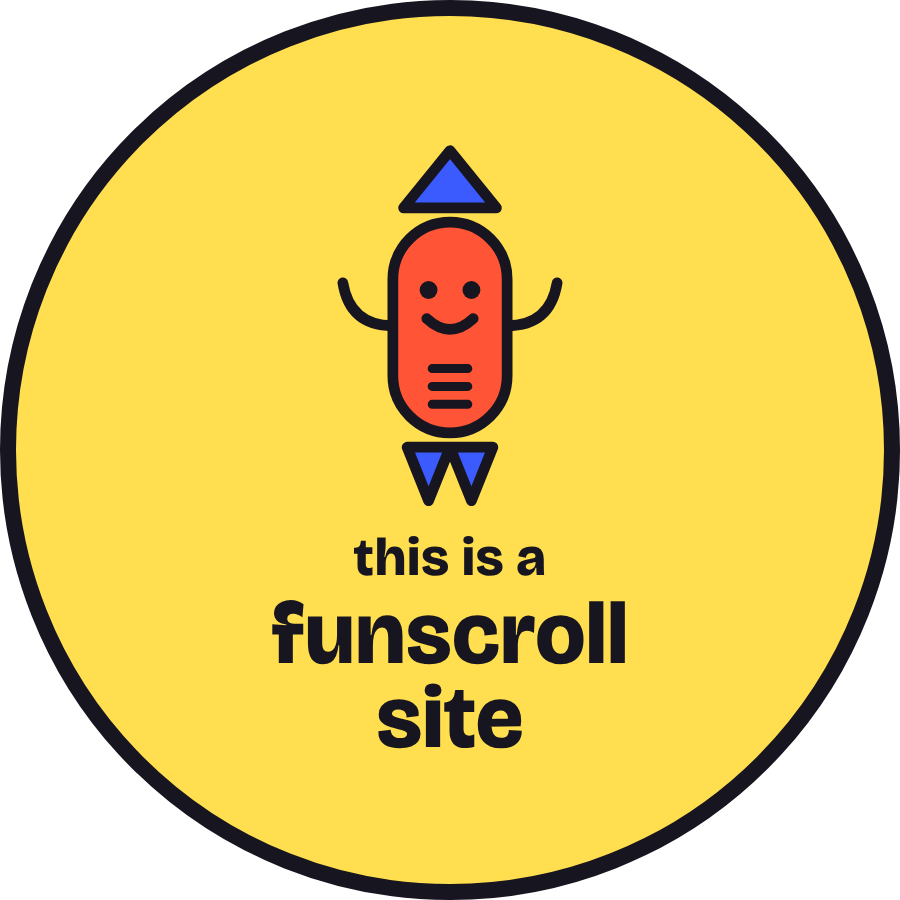
this-is-a-funscroll-site-redondo-amarillo.png
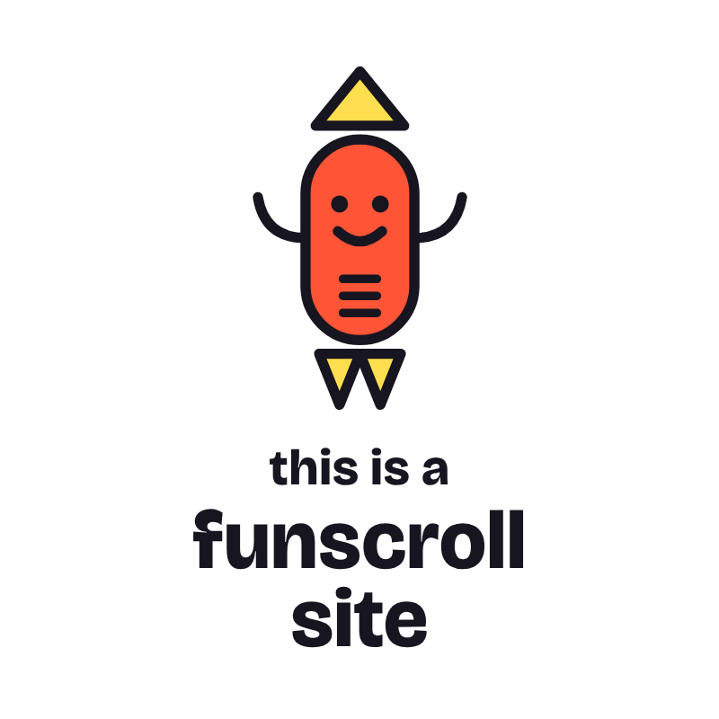
this-is-a-funscroll-site-scrollcito-transparente.png
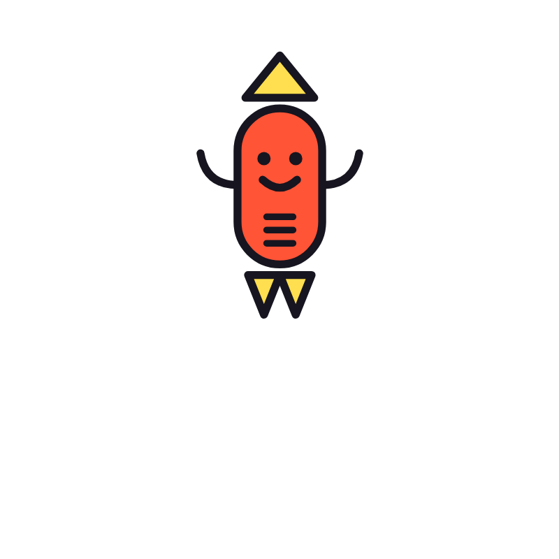
this-is-a-funscroll-site-scrollcito-transparente-blanco.png
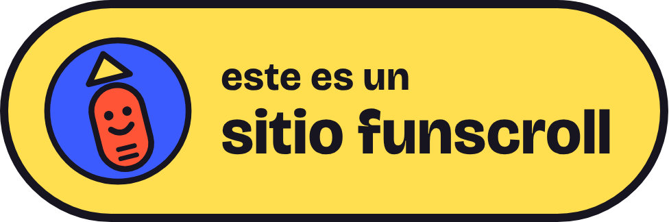
este-es-un-sitio-funscroll-amarillo.png
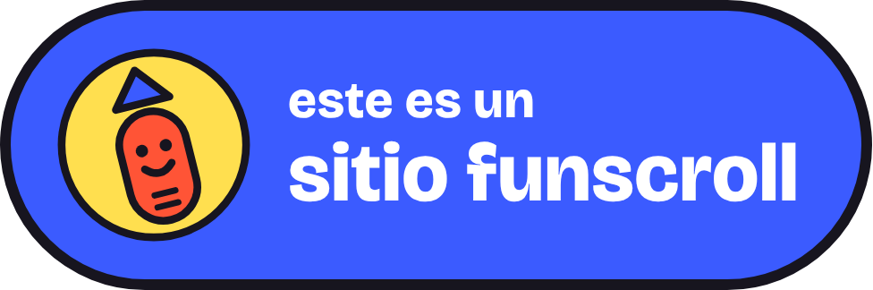
este-es-un-sitio-funscroll-azul.png
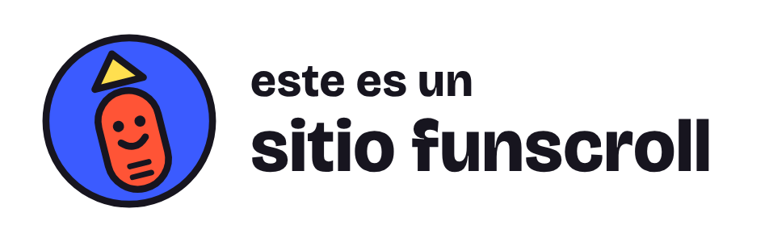
este-es-un-sitio-funscroll-transparente.png
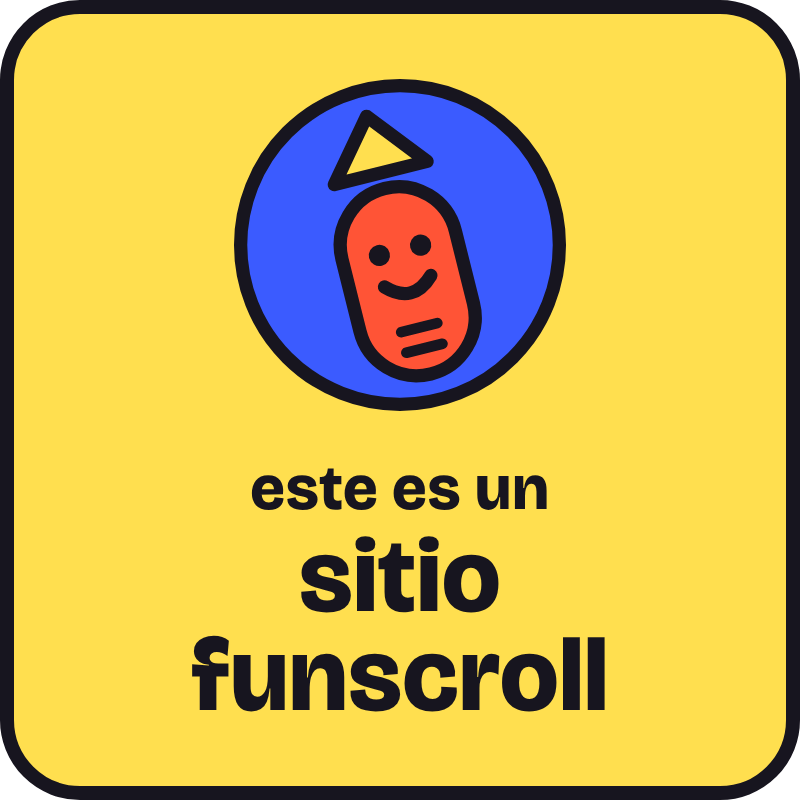
este-es-un-sitio-funscroll-cuadrado-amarillo.png
este-es-un-sitio-funscroll-cuadrado-azul.png
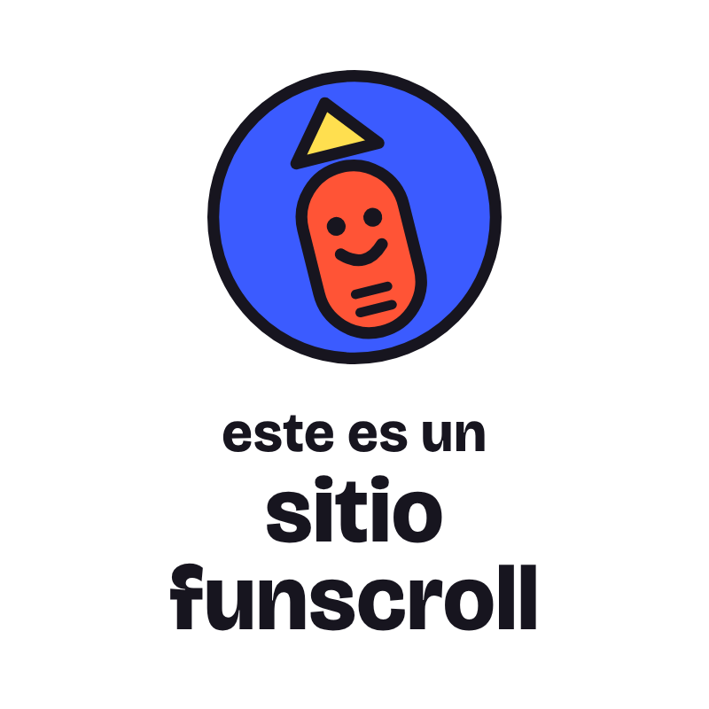
este-es-un-sitio-funscroll-cuadrado-transparente.png
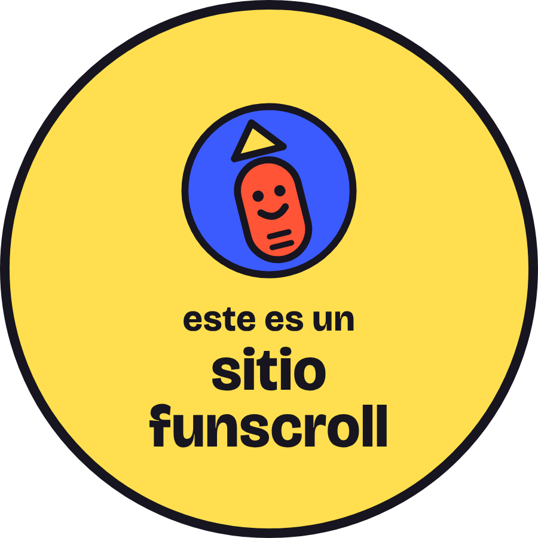
este-es-un-sitio-funscroll-redondo-amarillo.png
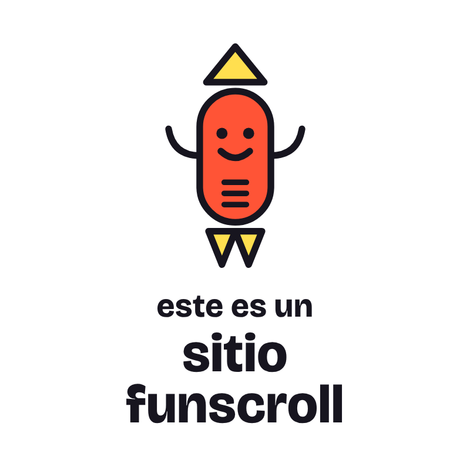
este-es-un-sitio-funscroll-scrollcito-transparente.png
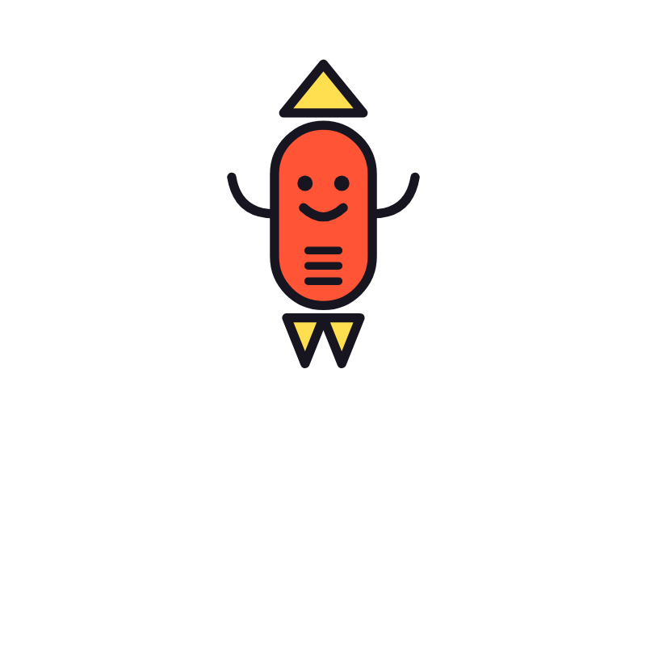
este-es-un-sitio-funscroll-scrollcito-transparente-blanco.png
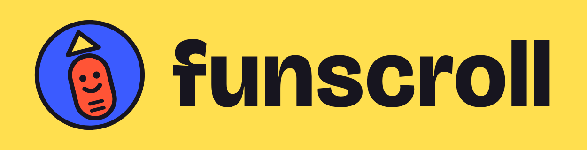
logo-funscroll-fondo-amarillo.png
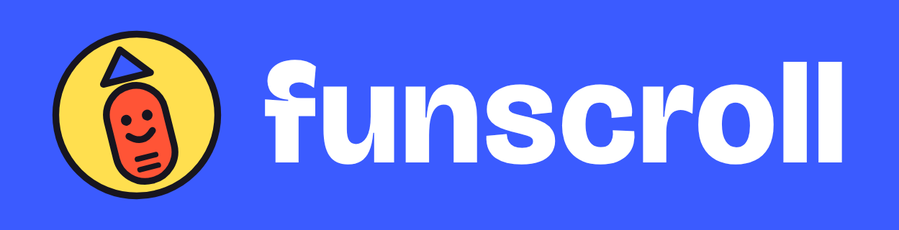
logo-funscroll-fondo-azul.png
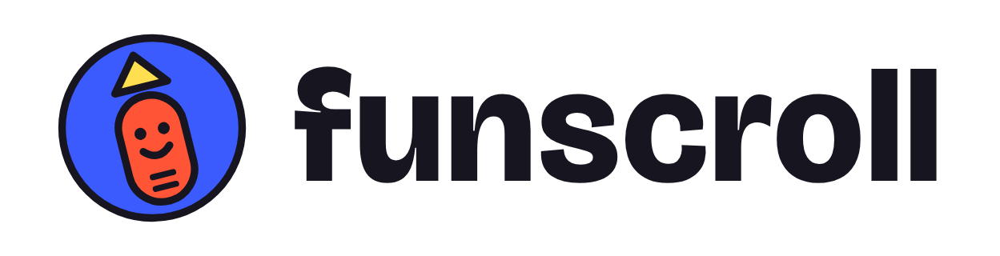
logo-funscroll-transparente.png
<!-- badge in a corner of your site --> <a href="https://funscroll.life"><img src="https://funscroll.life/assets/img/badge-176x62.png" width="88" height="31" alt="funscrollable"></a> <!-- or the bigger "this is a funscroll site" badge --> <a href="https://funscroll.life"><img src="https://funscroll.life/assets/media/this-is-a-funscroll-site-amarillo.png" width="240" alt="this is a funscroll site"></a> <!-- the webring widget --> <div id="funscroll-ring"></div> <script src="https://funscroll.life/kit/ring.js" defer></script>
Made something? Join the funscroll ring →